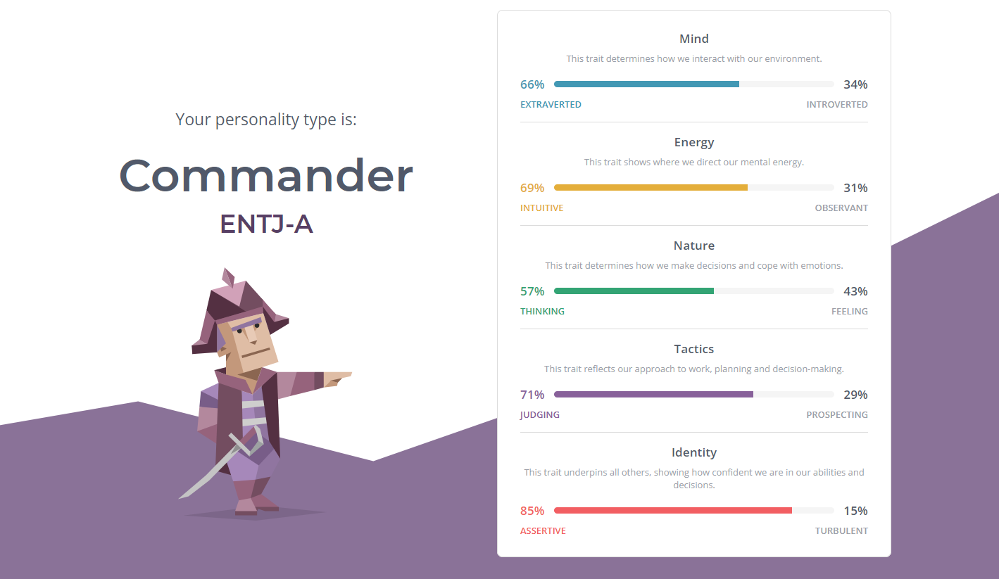

Even though my test came out ENTJ, I agree some of the features and I don't agree with some of them. To me, I am not an arrogant person, at least to the outside lol. However, when I am confident about a subject, I might be a bit stubborn. On the other hand, poor handling of emotions might be true; however, I suppress my feelings most of the time and try not to take actions with my emotions. For special periods of time, I might let my guards down yet that's not the case everytime. Also I don't think I am cold and ruthless but I admit I have a strict policy for inefficiency and I don't hesitate to say my word :>
Efficient – Commanders see inefficiency not just as a problem in its own right, but as something that pulls time and energy away from all their future goals, an elaborate sabotage consisting of irrationality and laziness. People with the Commander personality type will root out such behavior wherever they go.
Energetic – Rather than finding this process taxing Commanders are energized by it, genuinely enjoying leading their teams forward as they implement their plans and goals.
Self-Confident – Commanders couldn’t do this if they were plagued by self-doubt – they trust their abilities, make known their opinions, and believe in their capacities as leaders.
Strong-Willed – Nor do they give up when the going gets tough – Commander personalities strive to achieve their goals, but really nothing is quite as satisfying to them as rising to the challenge of each obstacle in their run to the finish line.
Strategic Thinkers – Commanders exemplify the difference between moment-to-moment crisis management and navigating the challenges and steps of a bigger plan, and are known for examining every angle of a problem and not just resolving momentary issues, but moving the whole project forward with their solutions.
Charismatic and Inspiring – These qualities combine to create individuals who are able to inspire and invigorate others, who people actually want to be their leaders, and this in turn helps Commanders to accomplish their often ambitious goals that could never be finished alone.
Stubborn and Dominant – Sometimes all this confidence and willpower can go too far, and Commanders are all too capable of digging in their heels, trying to win every single debate and pushing their vision, and theirs alone.
Intolerant - “It’s my way or the highway” – People with the Commander personality type are notoriously unsupportive of any idea that distracts from their primary goals, and even more so of ideas based on emotional considerations. Commanders won’t hesitate a second to make that fact clear to those around them.
Impatient - Some people need more time to think than others, an intolerable delay to quick-thinking Commanders. They may misinterpret contemplation as stupidity or disinterest in their haste, a terrible mistake for a leader to make.
Arrogant - Commander personalities respect quick thoughts and firm convictions, their own qualities, and look down on those who don’t match up. This relationship is a challenge for most other personality types who are perhaps not timid in their own right, but will seem so beside overbearing Commanders.
Poor Handling of Emotions - All this bluster, alongside the assumed supremacy of rationalism, makes Commanders distant from their own emotional expression and sometimes downright scornful of others’. People with this personality type often trample others’ feelings, inadvertently hurting their partners and friends, especially in emotionally charged situations.
Cold and Ruthless - Their obsession with efficiency and unwavering belief in the merits of rationalism, especially professionally, makes Commanders incredibly insensitive in pursuing their goals, dismissing personal circumstances, sensitivities, and preferences as irrational and irrelevant.